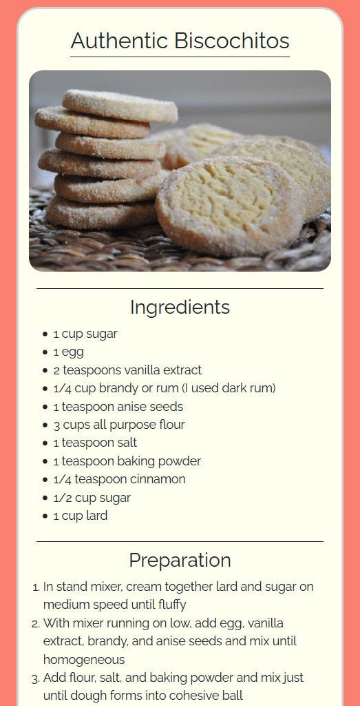
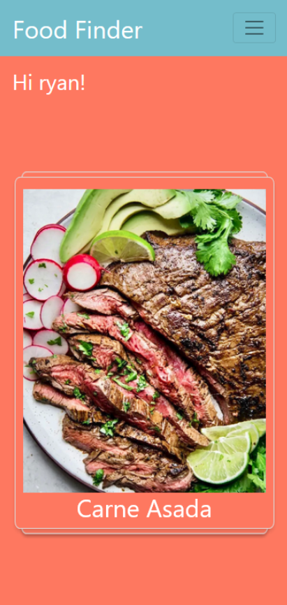
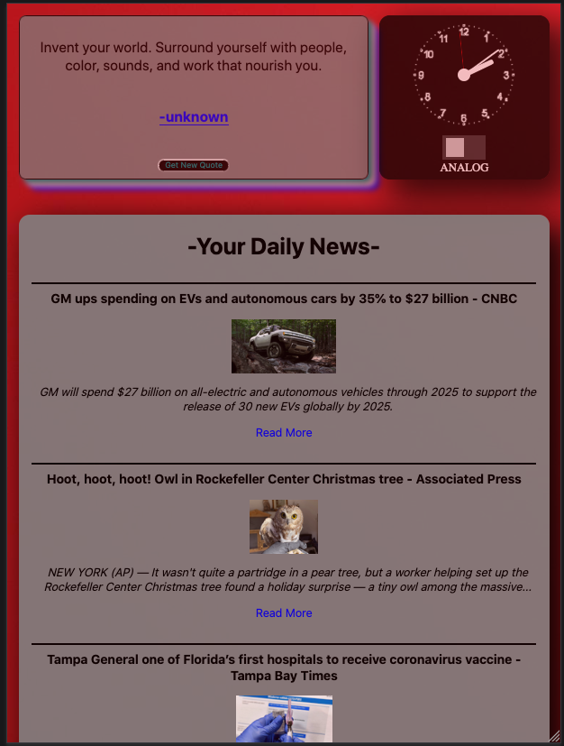

Intro

Growing up in rural Nebraska, I spent much of my time fueling my imagination by learning new musical instruments, and creating new music with them. I eventually began to learn to code and quickly realized the similarities of code and music, with each new language being comparable to a new instrument. I quickly fell in love with the art of software development and decided to take my new passion and make it a career.
My first step in entering the programming world was to get a hands-on education at the DigitalCrafts immersive bootcamp. In addition to the languages and technologies below, DigitalCrafts helped me learn how to quickly problem solve, and coordinate in a team setting.
Skills
Work
Food Finder (React)

With React we were able to improve upon our previous project while maintaining the core functionality of the swipe gesture. React allowed us to display more concise recipe information to the user, create more secure authorization, and implement a feature for the user to add their own recipes. Created with React, NodeJS, CarouselJS, Bootstrap, & ElephantSQL.
View it here
Food Finder

Food Finder is a mobile app designed to help people come up with ideas when they want to cook something but can't decide what. We utilized the carouselJS card-swiping method to maximize user experience. Liking the recipe will result in it getting added to your recipe list, where the user can see the ingredients for the dish and how to prepare it.
View it here
Glorp Dashboard

This front-end app is designed with a mobile first approach. It combines four different APIs to display the time, current news, a changing background, and a quote to start your day. My responsibilities included managing the News API, manipulating it with JavaScript, and styling with HTML & CSS.
View it here
About

Aside from programming and creating music, I love photography and spending my time outdoors particularly in Colorado where I enjoy camping and climbing mountains. My dad and I climbed our first mountain on a whim 6 years ago, had no idea what we were doing and ended up turning back due to weather. Since then we've climbed at least one mountain every year, including the one that sent us home on our first endevour.
Contact